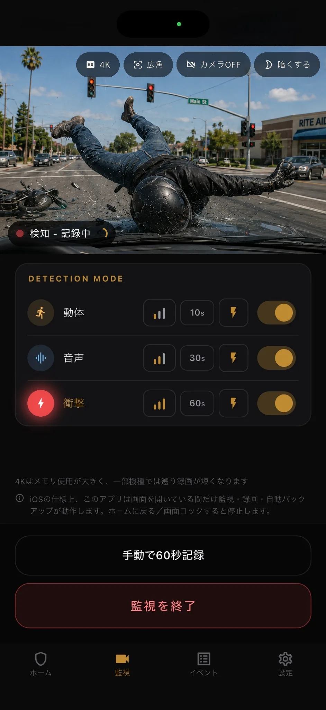

配線不要
余ったスマホを車内に置いて、車内にケーブルを通すことなく監視を開始できます。
BlackShisaは、人・車・カートなどによる画面内の変化、音、端末へ伝わる衝撃をきっかけに、駐車中の動画を端末内へ残すアプリです。
固定配線や車両の加工をせず、当て逃げやドアパンチをあとから確認するための記録を始められます。被害防止、相手やナンバーの特定、証拠能力は保証しません。
導入の手軽さ
専用ドラレコの駐車監視は、本体購入、配線、電源まわり、工賃、車種ごとの設置が必要になることがありますが、BlackShisa - Parking Dashcam Appは手元の余ったスマホで簡単に駐車監視を始められます。
余ったスマホを車内に置いて、車内にケーブルを通すことなく監視を開始できます。
車両加工やショップでの取り付けは不要。必要に応じて別の車にも移せます。
余ったスマホと簡単なマウント、必要に応じてより長い時間の駐車監視のためのモバイルバッテリーがあればすぐに始められます。
証拠保全
BlackShisa - Parking Dashcam Appは、使わなくなったスマホを使って、トラブルの前後を確認できる動画と静止画を残すことに集中した駐車監視アプリです。安さだけでなく、導入の手軽さそのものを重視しています。
検索目的を先に確認
「駐車監視アプリ」には、駐車監視員の接近通知、駐車中の車両記録、駐車位置の記録、駐車場検索があります。BlackShisaは車内スマホで一方向を撮り、駐車中のイベントを保存する種類です。駐禁通知・駐車位置・空車検索は行いません。
運営者・確認方法
このページはBlackShisa運営者が2026年8月13日に更新しました。検知前録画の端末条件、OSごとの動作、保存先を現行実装と照合し、未実測の検知率・ナンバー判読率・電池消費量は掲載していません。
重点3テーマ
駐車中の車両記録、当て逃げへの録画準備、ドラレコアプリの用途比較を混ぜず、必要な情報へ直接進めるよう整理しました。


使い方
ダッシュボード、フロントガラス、車内マウントなどから、接触やいたずらが起きやすい方向を映します。車両加工や配線、常設の工事は不要です。
動体、音声、衝撃のうち必要な検知を選びます。各検知モードの感度も3段階で選択可能です。バッテリー消費量削減のため、カメラビューのOFFや画面全体の低照度化も可能です。
検知すると、その瞬間の静止画に加えて検知前は最大3秒まで遡った動画を保存します。Androidも最大3秒で、監視開始直後など事前映像が不足する場合は短くなります。iPhoneは通常3秒ですが、低メモリモードまたは一部の4K端末条件では約1秒です。検知後は10秒、30秒、60秒から選べます。
イベントはオフラインでも確認できます。画像・動画を写真ライブラリへ保存したり、任意でGoogle DriveへのバックアップやGmailへの通知もできます。

検知
駐車中の出来事は一つのきっかけだけでは捉えきれません。BlackShisa - Parking Dashcam Appは動体・音声・衝撃を個別にON/OFFし、感度も調整できます。また、検知した瞬間にあなたのGmailに通知することができます。
人物認識ではなく、人、車、自転車、カートなどによる画面内の変化を端末上で検知します。カメラ移動や画面全体の明るさの変化を抑える処理も行います。
接触音や衝突音のような大きな音からささやき声のような小さな音まで、端末のマイク入力の音圧で検知します。
端末の加速度センサーで、接触や揺れによる衝撃を検知します。軽い接触では固定したスマホまで十分な揺れが届かず、検知されない場合があります。
いずれかのモードで検知した際にスマホのフラッシュライトを最大照度で点滅させることも可能です。フラッシュライトを点滅させる際の検知モードは選択可能です。

プライバシー
BlackShisa - Parking Dashcam Appは端末内保存を中心に設計していますので、オフラインでも利用可能です。駐車中の動画はあなたのスマホに保存するかGoogle Driveに自動バックアップすることができます。その他には一切送信されません。
制約
信頼できるアプリであるために、できることだけでなく制約も明確に伝えます。
iOSの仕様により、アプリを開いている間だけ監視できます。ホームに戻る、または画面ロックすると監視は停止します。
車内は日射で短時間に高温になります。端末メーカーの温度条件を確認し、端末が熱くなった場合は監視を停止して安全な場所で冷ましてください。
物理メモリが2.5GiB未満のiPhoneは低メモリモードとなり、検知前録画を約1秒、画質を標準へ調整します。4Kも一部のiPhoneでは検知前が約1秒です。
FAQ
ドライブレコーダーの駐車監視、余ったスマホのカメラアプリ、車の防犯アプリと比較するときの要点です。
完全な代替ではありません。BlackShisa - Parking Dashcam Appは余ったスマホを使い、駐車監視の導入ハードルを下げて証拠を残す用途に特化しています。常時録画や走行中録画は専用ドラレコが向いています。
当て逃げ、ドアパンチ、いたずら、車への接触、盗難未遂など、あとから動画や静止画で状況確認したい駐車中のトラブルを想定しています。
はい。証拠はまず端末内に保存されます。インターネットが必要なのは、任意のGoogle DriveバックアップやGmail通知を使う場合です。
英語、ドイツ語、スペイン語、日本語に対応します。
料金
BlackShisa - Parking Dashcam Appは7日間無料で試せます。無料期間後は月額980円です。